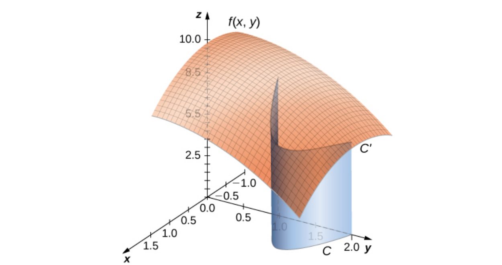
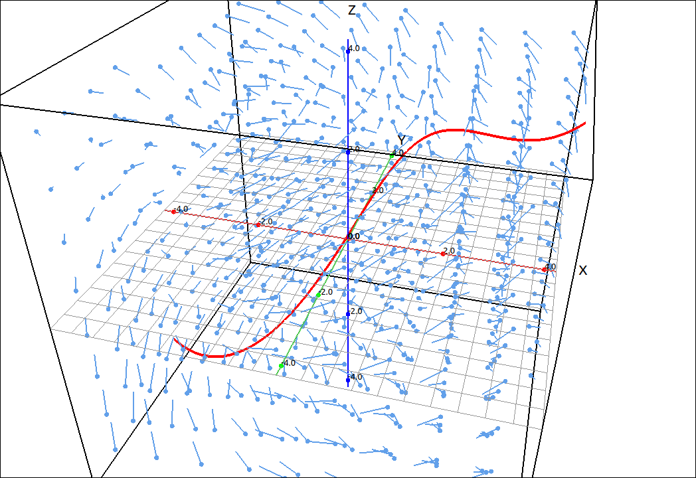
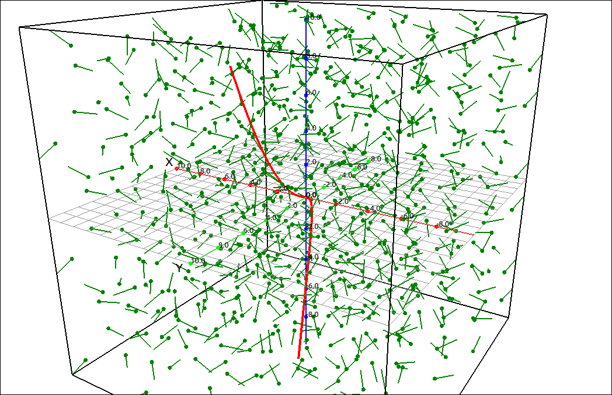

Line Integrals#
A line integral gives us the ability to integrate multivariable functions and vector fields over arbitrary curves in a plane or in space. In this respect they are generalizations of the familiar definite integral. When we take a definite integral we integrate the function over the interval \([a, b].\) The interval \([a, b]\) can be regarded as a curve in the plane, the straight line from \([a, 0]\) to \([b, 0].\) For a general line integral we take a curve C in the plane and integrate a multivariable function over this line.
There are two types of line integrals: scalar line integrals and vector line integrals. Scalar line integrals are integrals of a scalar function over a curve in a plane or in space. Vector line integrals are integrals of a vector field over a curve in a plane or in space.
Line Integrals in the Plane#
The derivation of the line integral calculation below follows the same logic as the derivation for the arc-length of a curve.
Definition: Line Integral
Let \(C = \mathbf{r}(t) = (x(t), y(t))\) be a smooth curve in the plane with \(\mathbf{r}(a)\) being one endpoint to the curve and \(\mathbf{r}(b)\) the other endpoint to the curve. Say \(f(x, y)\) is a function of two variables whose domain contains the curve C, then the line integral of f over C with respect to arc-length is,
Recall that with arc-length,
so
With this we can make a more compact version of the line integral formula above,
Line integrals have numerous applications which depend on what the function \(f(x, y)\) represents. Geometrically, it has a similar meaning as definite integrals of a single variable function over an interval, as one would expect. If we graph the curve C on the xy-plane and then extend a “curtain” to the function, the line integral is the net area of that curtain.

Line Integral#
Example: Line Integral in the Plane#
In this example we will find the line integral of \(f(x, y) = x^2+y^2\) where C is the portion of the parabola given by \(\mathbf{r}(t) = (t, 3 t^2)\) for \(0 \leq t \leq 5.\) We will use,
CLAE#
Input the function,
x^2+y^2
also input the curve,
[t, 3*t^2]
We will assume that these are in R1 and R2 respectively. First we will create, \(f(\mathbf{r}(t))\), select R1, then select Algebra > Evaluate, leave the variables as [x, y] and input R2 for the expressions. The result is R3, \(9 t^{4} + t^{2}.\) Now select R2 and then Calculus > Derivative, the result is R4, \(\left[ 1, \ 6 t\right].\) Select R4 and then select Vector > Length, the result is R5, \(\sqrt{36 t^{2} + 1}.\) Input R3*R5 and this will be our integrand,
Integrate this from 0 to 5, the final result is,
Maxima#
The command for the final integral is,
integrate(sqrt(36*t**2 + 1)*(9*t**4 + t**2), t, 0, 5);
The result is,
One thing that we observed before is that a curve can have many different parameterizations, and depending on the calculation you are doing a different parameterization may produce a different result. This is not the case with line integrals.
Theorem: Line Integrals are Independent of Parameterization
Given any two parameterizations of the curve C, ss long as the curve is traversed exactly once by the parameterization, then the line integral calculated from either parameterization is equal to the other.
One stipulation to our formula is that the curve C is smooth over the interval \([a, b].\) This means that \(\mathbf{r}'(t)\) is continuous and nonzero on the interval \([a, b].\) If our curve C is not smooth but can be broken down into a finite sequence of smooth curves we can still take the line integral over this curve.
Theorem: Line Integrals Over Piecewise Smooth Curves
If the curve \(C\) is piecewise-smooth meaning that it can be broken down into a sequence of smooth curves \(C_1, C_2, \ldots, C_n\), then,
Other line integrals that will prove useful are line integrals with respect to the coordinate axes.
Definition: Line Integral With Respect to the Coordinate Axes
Let \(C = \mathbf{r}(t) = (x(t), y(t))\) be a smooth curve in the plane with \(\mathbf{r}(a)\) being one endpoint to the curve and \(\mathbf{r}(b)\) the other endpoint to the curve. Say \(f(x, y)\) is a function of two variables whose domain contains the curve C, then,
Example: Line Integral With Respect to the Coordinate Axes#
In this example we will calculate,
where C is the line segment from \((3, -1)\) to \((2, 5).\) To parameterize a line segment from point \(P\) to point \(Q\) we can use the simple formula, \(\mathbf{r}(t) = (1-t)P + tQ\) for \(0 \leq t \leq 1.\) So for this line segment we have,
So \(x'(t) = -1\) and \(y'(t) = 6\) and our integral is,
CLAE#
To do this integral first input the integrand,
(6*t - 1)^2 * sin(3 - t) * (-1) + (3 - t)*(6*t - 1)*6
Select Calculus > Definite Integral, input the bounds of 0 and 1, the result is,
Maxima#
The Maxima command for the integral is,
integrate((18 - 6*t)*(6*t - 1) + (6*t - 1)**2*sin(t - 3), t, 0, 1);
and results in,
When we define a curve \(C = \mathbf{r}(t)\) for \(a \leq t \leq b\) we are traversing the curve in a particular direction, the direction of increasing \(t.\) We can also traverse the curve in the negative direction, that is backwards along the curve, denoted by \(-C.\) For definite integrals of a single variable we know that reversing the bounds gives us a \(-1\) factor for the integral. A similar thing happens with coordinate line integrals but not with integrals with respect to arc-length.
Theorem: Line Integrals and Orientation
Let \(C\) be a curve defined by \(\mathbf{r}(t)\) for \(a \leq t \leq b\) and let \(-C\) represent the curve with the same points but opposite orientation. Then,
Line Integrals in Space#
Line integrals for space curves are identical to those in the plane, we simply add on another dimension.
Definition: Line Integrals for Space Curves
Let \(C = \mathbf{r}(t) = (x(t), y(t), z(t))\) be a smooth curve in space with \(\mathbf{r}(a)\) being one endpoint to the curve and \(\mathbf{r}(b)\) the other endpoint to the curve. Say \(f(x, y, z)\) is a function of three variables whose domain contains the curve C, then the line integral of f over C with respect to arc-length is,
Theorem: Line Integrals Over Piecewise Smooth Curves
If the curve \(C\) is piecewise-smooth meaning that it can be broken down into a sequence of smooth curves \(C_1, C_2, \ldots, C_n\), then,
Definition: Line Integral With Respect to the Coordinate Axes
Let \(C = \mathbf{r}(t) = (x(t), y(t), z(t))\) be a smooth curve in space with \(\mathbf{r}(a)\) being one endpoint to the curve and \(\mathbf{r}(b)\) the other endpoint to the curve. Say \(f(x, y, z)\) is a function of three variables whose domain contains the curve C, then,
Theorem: Line Integrals and Orientation
Let \(C\) be a curve defined by \(\mathbf{r}(t)\) for \(a \leq t \leq b\) and let \(-C\) represent the curve with the same points but opposite orientation. Then,
Example: Line Integral#
In this example we will find the line integral of \(f(x, y, z) = x^2+y^2+z\) where C is one turn of the helix given by \(\mathbf{r}(t) = (\cos(t), \sin(t), t)\) for \(0 \leq t \leq 2\pi.\) We will again use the formula,
CLAE#
Input the function,
x^2+y^2+z
also input the curve,
[cos(t), sin(t), t]
We will assume that these are in R1 and R2 respectively. First we will create, \(f(\mathbf{r}(t))\), select R1, then select Algebra > Evaluate, leave the variables as [x, y, z] and input R2 for the expressions. The result is R3 and R4 (simplified), \(t + \sin^{2}{\left(t \right)} + \cos^{2}{\left(t \right)} = t+1.\) Now select R2 and then Calculus > Derivative, the result is R5, \(\left[ - \sin{\left(t \right)}, \ \cos{\left(t \right)}, \ 1\right].\) Select R5 and then select Vector > Length, the result is R6 and R7 (simplified), \(\sqrt{\sin^{2}{\left(t \right)} + \cos^{2}{\left(t \right)} + 1} = \sqrt{2}.\) Input R4*R7 and this will be our integrand,
Integrate this from 0 to \(2\pi\), the final result is,
Line Integrals of Vector Fields#
The second type of line integrals are vector line integrals, in which we integrate along a curve through a vector field. This is often motivated by the concept of Work. One question would be is if this vector field was a force field that described the force on a particle at each point in space and we have an object that is moving along this curve, hoe much work is done by the object to traverse the curve? Line integrals through a vector field have many more applications then this but it is a good illustration of what we are doing.

Line Integral Through a Vector Field#
Definition: Line Integrals of Vector Fields
Let \(\mathbf{F}\) be a continuous vector field and let \(C = \mathbf{r}(t)\) for \(a \leq t \leq b\) be a smooth curve contained in the vector field. Then the line integral of F along C is
The above formulas apply to both two and three dimensions. If the field and curve are in two dimensions, specifically, \(\mathbf{F}(x, y) = P \; \mathbf{i} + Q \; \mathbf{j}\) and \(C = \mathbf{r}(t) = (x(t), y(t)),\) then
If the field and curve are in three dimensions, specifically, \(\mathbf{F}(x, y, z) = P \; \mathbf{i} + Q \; \mathbf{j} + R \; \mathbf{k}\) and \(C = \mathbf{r}(t) = (x(t), y(t), z(t)),\) then
Theorem: Properties of Vector Line Integrals
If \(\mathbf{F}\) and \(\mathbf{G}\) be continuous vector fields that contain a smooth curve C. Then
\(\displaystyle \int_C (\mathbf{F} + \mathbf{G}) \cdot d\mathbf{r} = \int_C \mathbf{F} \cdot d\mathbf{r} + \int_C \mathbf{G} \cdot d\mathbf{r}\)
\(\displaystyle \int_C k \mathbf{F} \cdot d\mathbf{r} = k \int_C \mathbf{F} \cdot d\mathbf{r}\) for a constant \(k.\)
\(\displaystyle \int_{-C} \mathbf{F} \cdot d\mathbf{r} = - \int_C \mathbf{F} \cdot d\mathbf{r}\)
If the curve \(C\) is piecewise-smooth meaning that it can be broken down into a sequence of smooth curves \(C_1, C_2, \ldots, C_n\), then,
Example: Line Integrals of a Vector Field#
In this example we will take the vector field \(\mathbf{F}(x, y, z) = \left( \sin{\left(y \right)}, \ \cos{\left(z \right)}, \ \sin{\left(x + y \right)}\right)\) and the twisted cubic \(\mathbf{r}(t) = \left( t, \ t^{2}, \ t^{3}\right)\) for \(-2 \leq t \leq 2\) and find
CLAE#
Input the vector field,
[sin(y),cos(z),sin(x + y)]
and the curve,
[t,t^2,t^3]
We will assume that these come in as R1 and R2 respectively. Click and drag both of these to the 3D graphics window, the first should come in as a vector field and the second as a space curve. Change the bounds on the space curve to \(-2\) and \(2.\) The image should look like the following. Move the graph around to get a feel for the curve and field.

Line Integral Through a Vector Field#
To continue the calculation, select R1 then select Algebra > Evaluate, input R2 as the expressions, the result is R3,
Now select R2 and take its derivative, the result is R4,
Now take the dot product of R3 and R4, you can do this by selecting R3, then select Vector > Dot Product, in the dialog that appears select R4 and click OK. The result will be,
Note that there is a line over some of the t terms. This is the complex conjugate of t. Select Algebra > Simplify Assuming Real Variables and the result is,
Now integrate this between \(-2\) and \(2.\) The result is,
which means that CLAE (SymPy) could not evaluate the integral exactly. Select this output and then select Algebra > Approximate and we get the approximate result of, 4.2440999323061119222.
Maxima#
The command for the integral is,
integrate(3*t**2*sin(t*(t + 1)) + 2*t*cos(t**3) + sin(t**2), t, -2, 2);
The output is fairly lengthy with several special functions, the approximate value from CLAE is probably more informative.